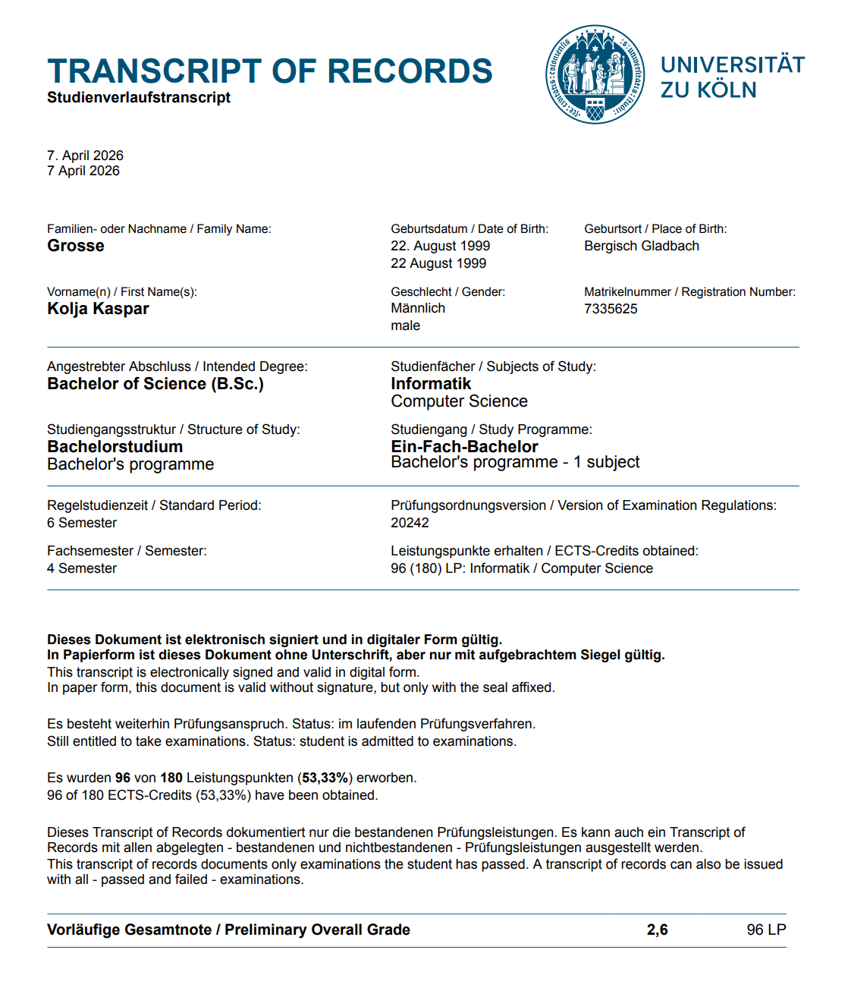
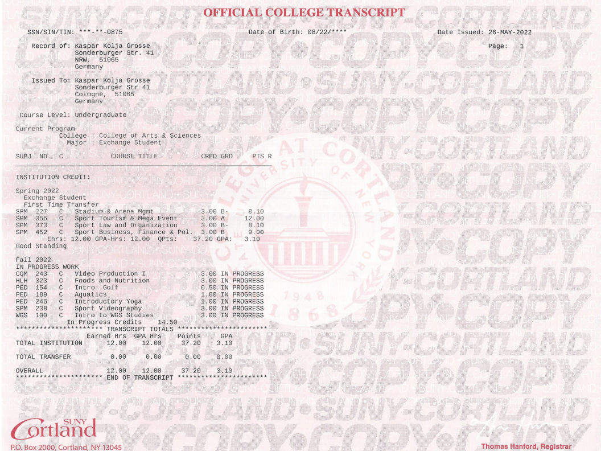
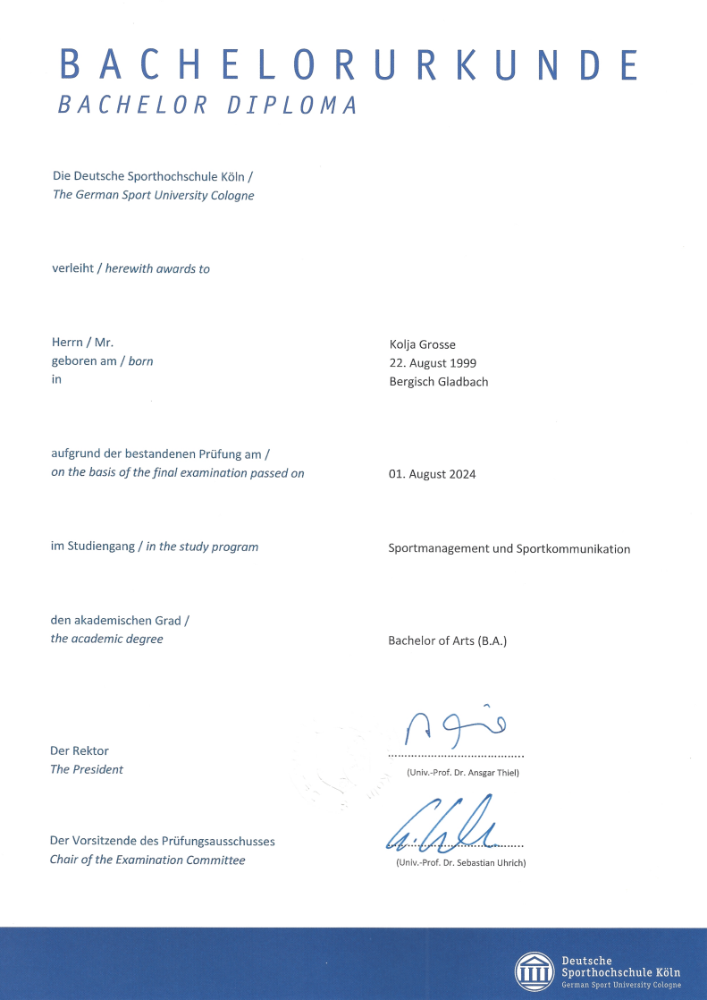
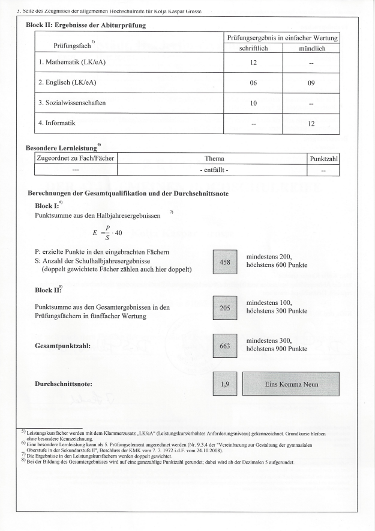

Kurzprofil
Informatikstudent der Universität zu Köln mit praktischer Erfahrung in Cloud- und DevOps-Technologien. Eigenständige Umsetzung einer Website auf AWS, Containerisierung von Anwendungen mit Docker sowie Entwicklung von Python-Projekten. Hohe Lernbereitschaft und Interesse an Automatisierung, Cloud Computing und moderner Softwareentwicklung.
IT-Kenntnisse
Cloud & Infrastruktur
AWS, Docker, Proxmox VE
Programmiersprachen
Python, Java
Betriebssysteme
Linux, Windows
Projekte
Website auf AWS (high-definition.net)
Digitale Fotoalben mit Flugvisualisierung.
S3, CloudFront, Lambda, DynamoDB, IAM, API Gateway
S3, CloudFront, Lambda, DynamoDB, IAM, API Gateway
Smarthome-Steuerung auf Homeserver
Zigbee Koordinator in Kombination mit Python-Script zur Steuerung und Automatisierung meiner Smartlampen bzw. Smartsteckdosen.
Homeserver mit Proxmox
Aufbau eines Homeservers mit Proxmox VE als Hypervisor. Nutzung als Jellyfin Videoserver und IT-Spielplatz.
Ausbildung
10/2024 - heute Universität zu Köln Bachelor Informatik (vorläufig 2,6)
Bisher belegte Module: Java-Programmierung, Datenbanken, Datenvisualisierung, Mathematik und Logik sowie Softwaretechnik.

2022 State University of New York - Cortland Sportmanagement (GPA 3,10 ~ 2,0 in Deutschland)

10/2019 - 08/2024 Deutsche Sporthochschule Köln Bachelor Sportmanagement (2,5)

2017 Hölderlin Gymnasium Köln LKs Mathematik und Englisch (1,9)
Abiturzeugnis

Berufserfahrung
01/2025 - 12/2025 Stake F1 Team Kick Sauber Formel 1 Chauffeur für Audi Team Principal
Chauffeur-Einsatz bei 11 von 24 Formel-1-Rennen im Jahr 2025 über die Eventurline GmbH & Co. KG. Unter anderem Fahrdienst für den Team Principal des Sauber Teams.